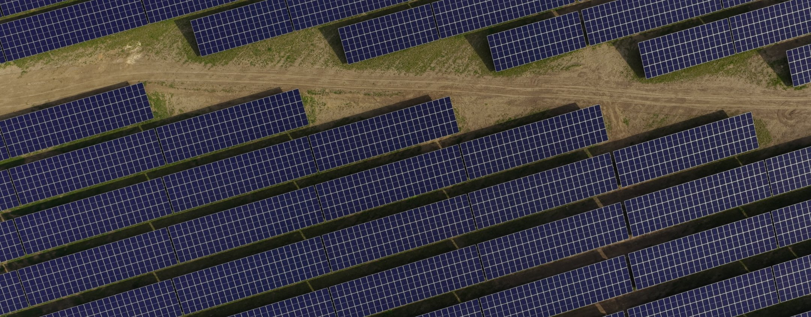

PV and BESS –
Reliable. Sustainable. Profitable.
be ready.
The future is renewable. As a trusted partner for photovoltaic and battery
energy storage projects, we develop sustainable energy solutions with
long-term commercial benefits. Together with landowners and investors, we
create lasting value – for local businesses, communities and the
environment. Ready for the future?
We’re here to help you make it happen.